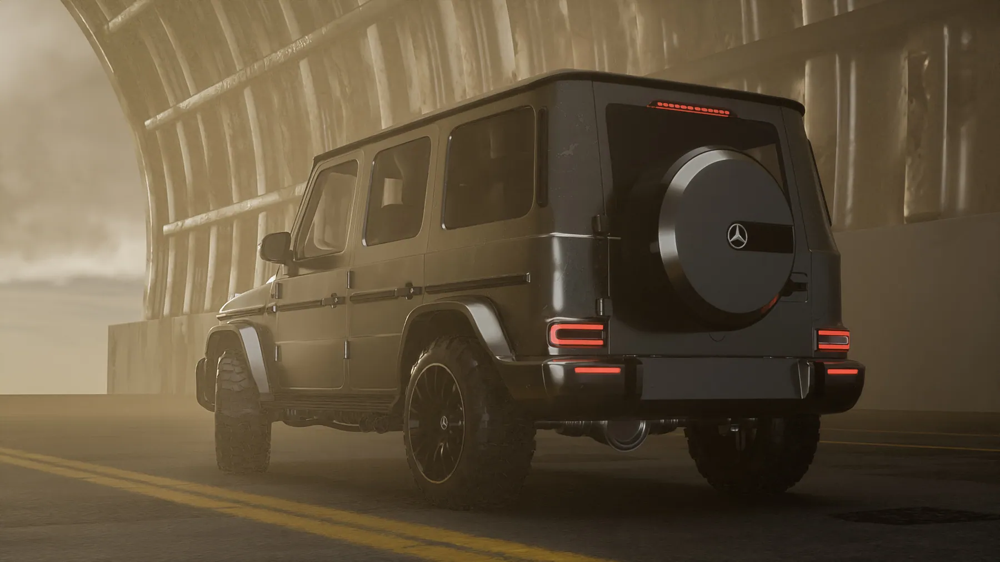
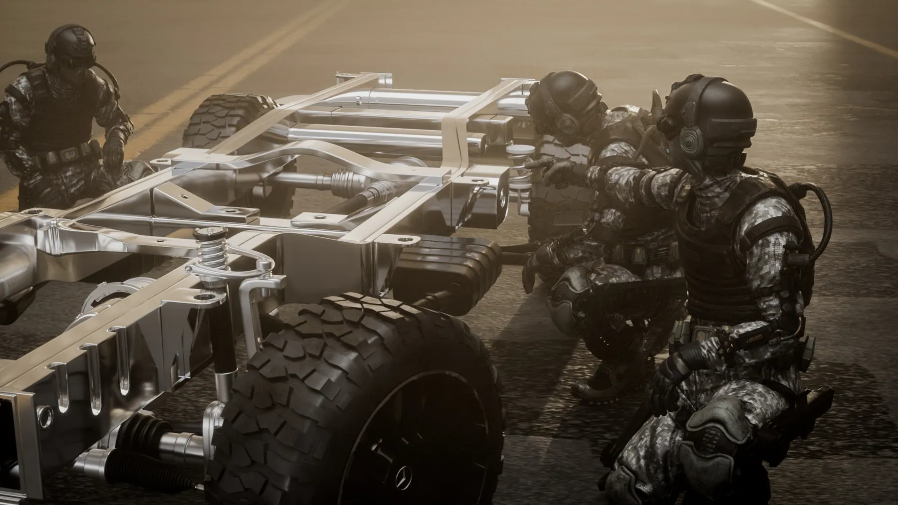
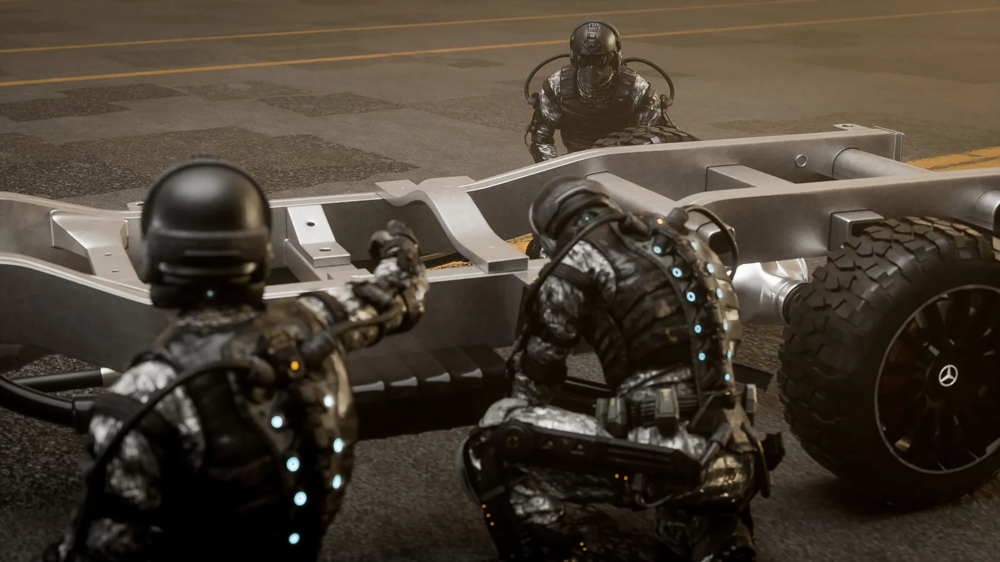
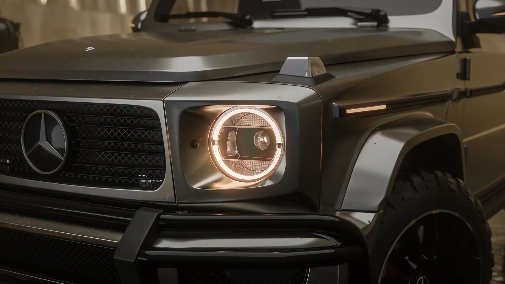
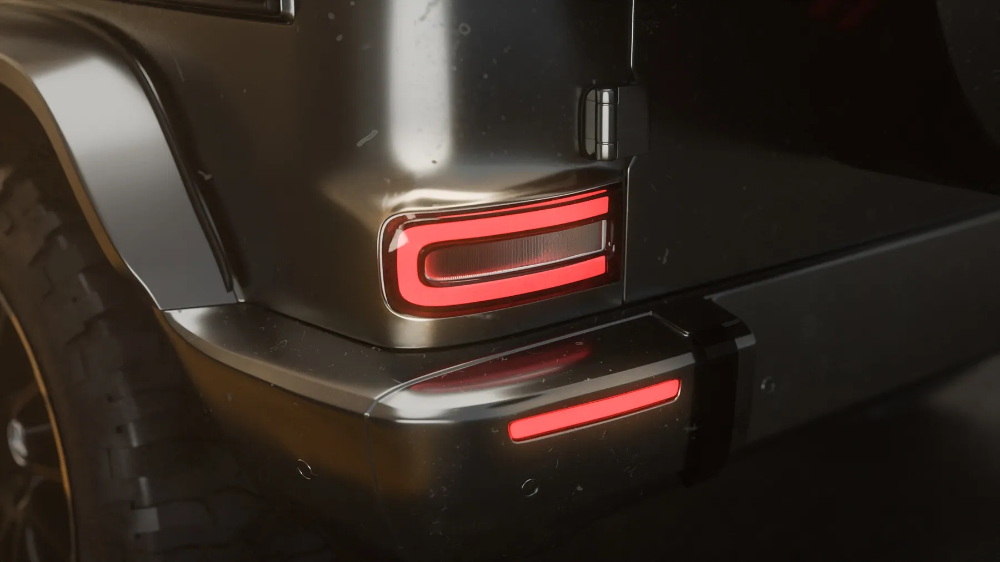
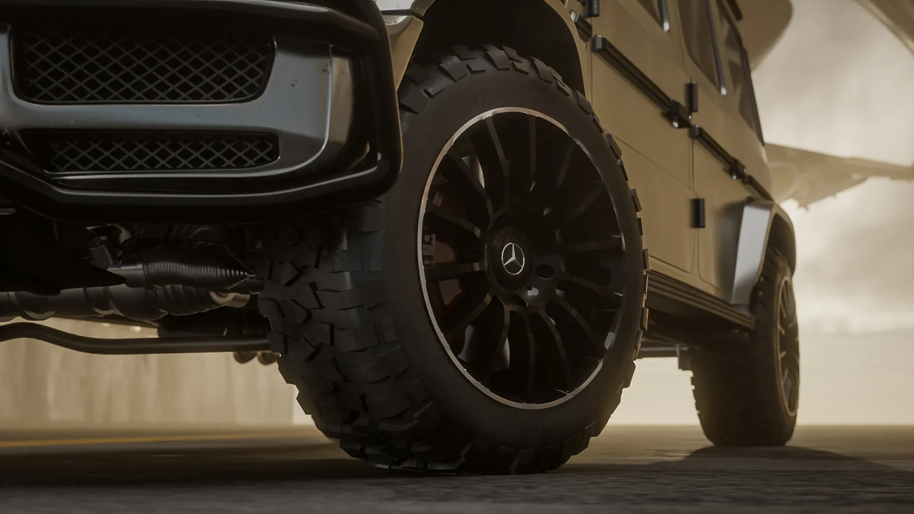
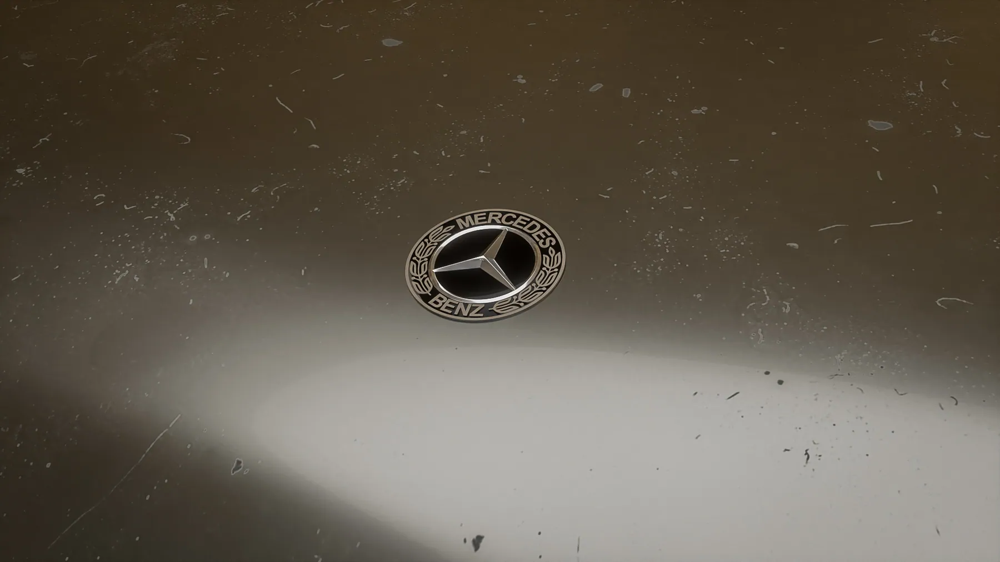
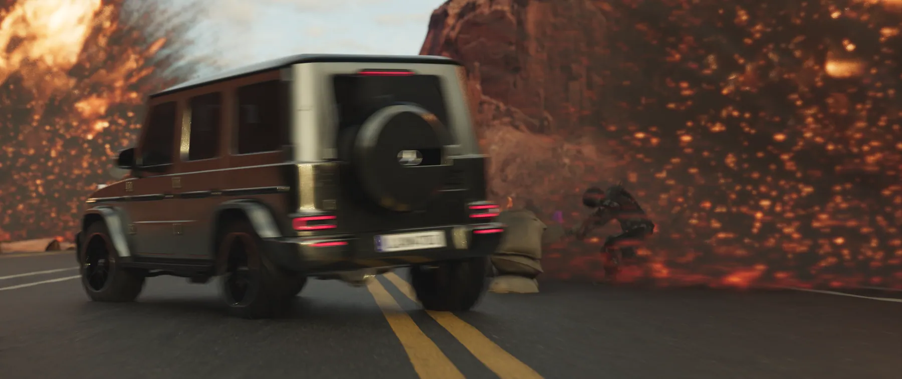

Dự án · Dự án của studio · 2024
Mercedes-AMG G63: TVC dựng hoàn toàn bằng 3D
Một chiếc G63 trong đường hầm, đội kỹ thuật mặc đồ chiến thuật, rồi khung gầm trần trụi được lắp lại từng mảnh trước khi xe lao ra giữa lửa. Toàn bộ là hình dựng: xe, người, bối cảnh, khói lửa. Không có cảnh quay thật nào trong bộ này.
Bài toán
Ba thứ khó nhất
Sơn đen trong đường hầm tối
Xe đen trên nền bê tông xám, ánh sáng duy nhất hắt từ miệng hầm. Nếu để sơn tự tối theo bối cảnh thì cả chiếc xe biến thành một khối đen không đọc được hình. Phải dựng riêng nguồn sáng viền để giữ đường nét thân xe.
Người trong khung hình 3D
Có người thì tỉ lệ xe mới đọc được, nhưng người dựng 3D là thứ dễ lộ giả nhất. Giải pháp là để họ trong bóng tối và trong khói, làm nhiệm vụ cụ thể thay vì đứng tạo dáng.
Cận cảnh phải chịu được soi
Đèn, lốp, ống xả, logo trên nắp ca-pô đều lên cận. Ở cỡ đó không giấu được gì: khe hở phải đúng, bo cạnh phải bắt sáng, bụi phải có chỗ bám hợp lý.
Hình ảnh
Từng cảnh, và lý do








Cách làm
Năm bước
Dựng xe trước, dựng cảnh sau
Chiếc xe phải đứng được dưới một đèn trung tính trước đã. Xong mới mang vào hầm, vào lửa. Làm ngược lại thì mọi lỗi hình khối đều bị bối cảnh che mất cho tới lúc muộn.
Một sân khấu, nhiều cảnh
Đường hầm dựng một lần rồi dùng lại cho gần hết bộ shot. Nhờ vậy các cảnh cắt vào nhau không lệch tông, và thời gian dồn được vào phần chi tiết.
Cận cảnh làm riêng
Các shot macro dùng bản dựng chi tiết hơn, chỉ giữ phần lọt khung. Dựng chi tiết cả xe cho một cú cận là cách nhanh nhất để render treo máy.
Khói và lửa đặt sau chủ thể
Hiệu ứng là nền, không phải nhân vật. Mọi lớp khói lửa đều nằm sau hoặc ngang xe, không bao giờ phủ lên mặt trước.
Cắt hai tỉ lệ từ cùng một cảnh
Khung 16:9 và 9:16 dựng từ cùng bối cảnh nhưng đặt camera riêng, không cắt cúp lại. Cắt cúp thì bố cục dọc luôn trông như phần thừa của bản ngang.
Muốn làm được shot như thế này?
Đây là đúng những kỹ năng trong lộ trình LXAM Academy, dựng hình, ánh sáng, render tách lớp, dựng phim. Học bằng dự án thật, có người sửa bài.